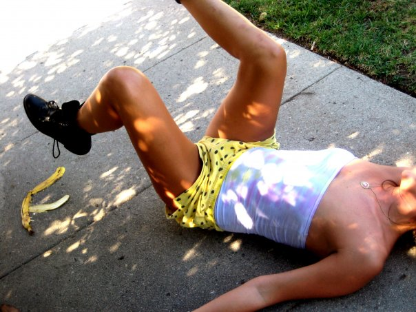

Comedy @ The Growler Guys
– 3rd Saturday of each month at 8 PM
– 3rd Saturday of each month at 8 PM
C A L E N D A R
November 2019 —
Sam Miller, Jamie Edwards, Rochelle Cote,
Jamie Carbone, Susan Rice, Andrew Sleighter, Chris Mejia,
Kirsten Kuppenbender
December 2019 —
Gabriel Rutledge, Amanda Arnold, Chris
Johnson
January 2020 —
Adam Pasi + MORE !
April 2020 —
Maggie Maye, Adam Pasi
–